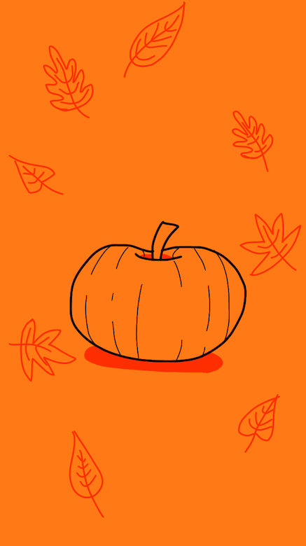
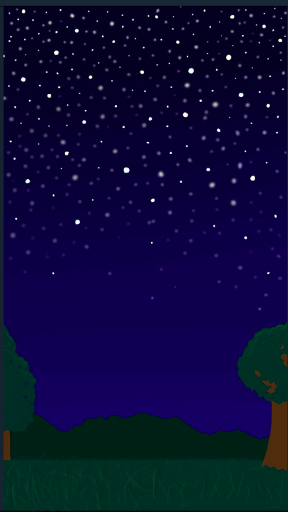
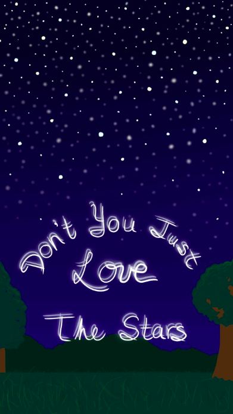
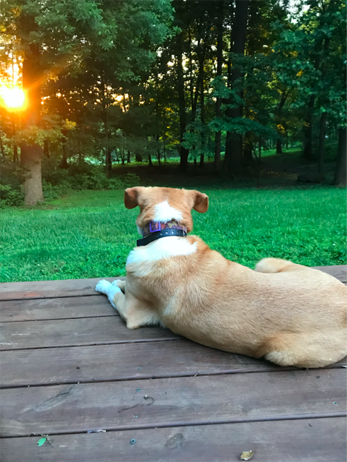
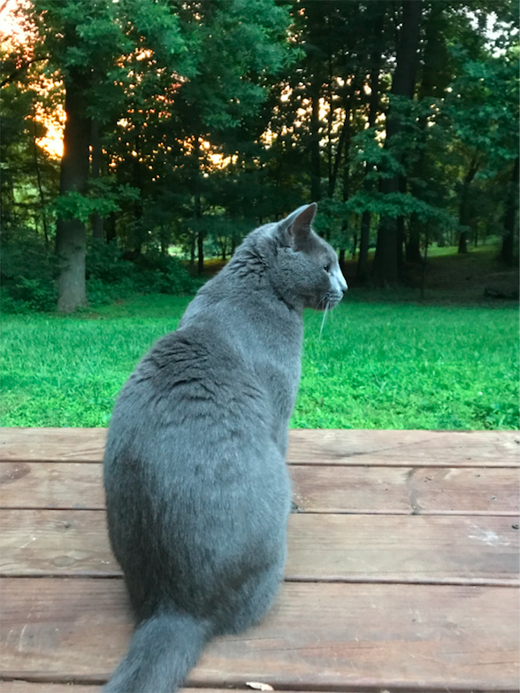
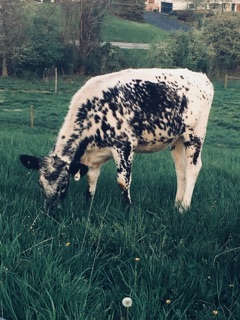
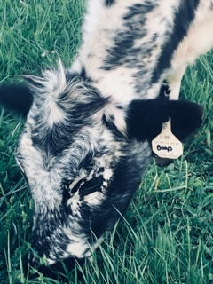

Note: All drawings are my own and all pictures were taken by me.
My first three pictures are drawings I have made for my phone background. I am okay with other people using the drawings as their own phone's background, as long as they keep in mind the drawing is not their own.

A drawing I made of a pumpkin surrounded by leaves for my phone background for the Halloween season. I like this drawing because it's simple and cute but also reminds me it's spooky season each time I look at my phone.

A drawing I made of stars in the sky with two trees on the side and trees in the background. It was my home screen background for my phone before I created the pumpkin one above.

The same drawing I had made that is displayed above but now with the words "Don't You Just Love The Stars" near the middle/bottom of the drawing. This used to be my lock screen before I switched to the pumpkin drawing.
My next few pictures are pictures I have taken of either my own pets or of my cow I used to show.

This is a picture of my dog, Copper. While I do not know the mix of breeds he is I do know he was born on a farm. I got him when I was in first grade and his birthday is on June 14. He is nine years old currently and he is a good boy.

This is a picture of my older gray cat, Cinder. He is a domestic shorthair and is generally kept indoors, though he sometimes escapes when we open the door. We got him after my father picked my sisters and I up from an overnight camp and we drove past a driveway with a "Free Kittens" sign. He was the last of his litter and was about nine weeks old when we got him. He is currently three (??) years old.


These are pictures of a cow I used to work with through 4-H, Boop. She is a black and white lineback and was born in early 2017. She is a great cow.